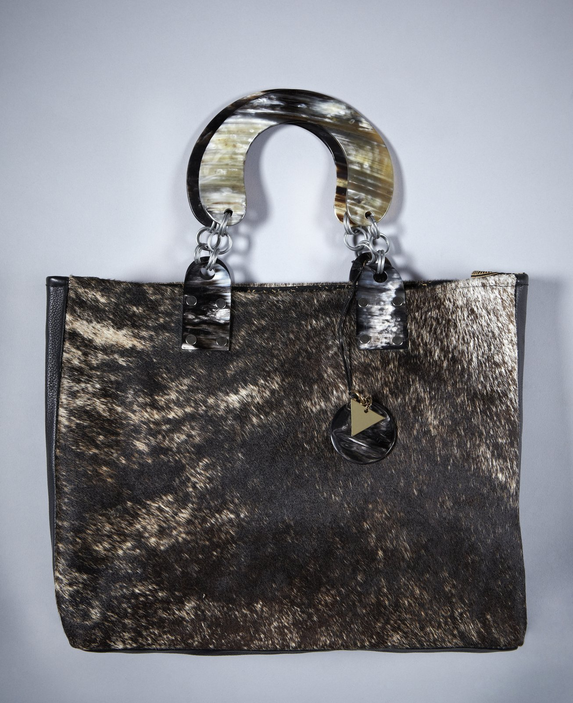
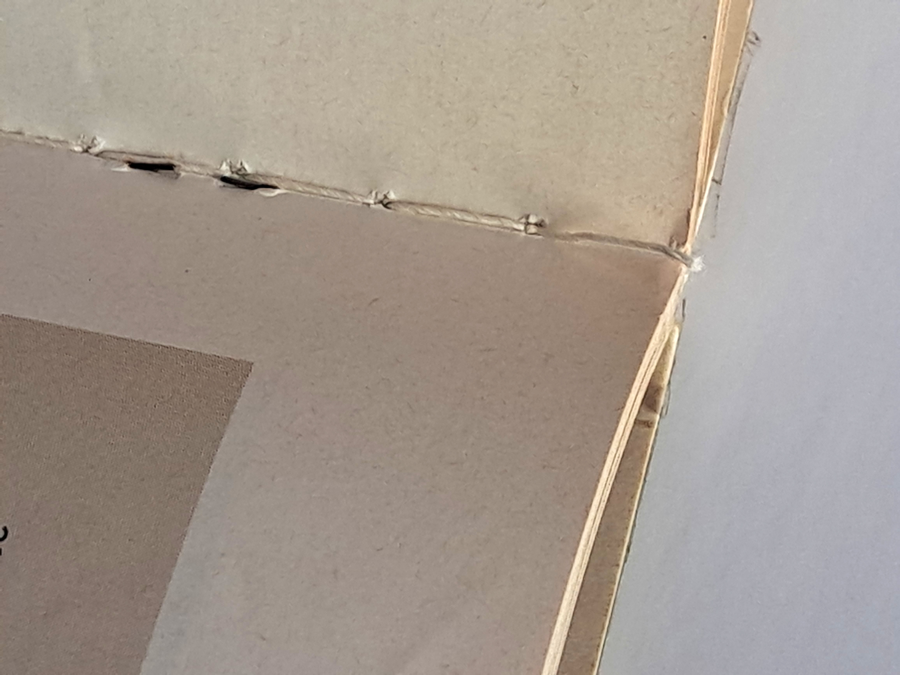
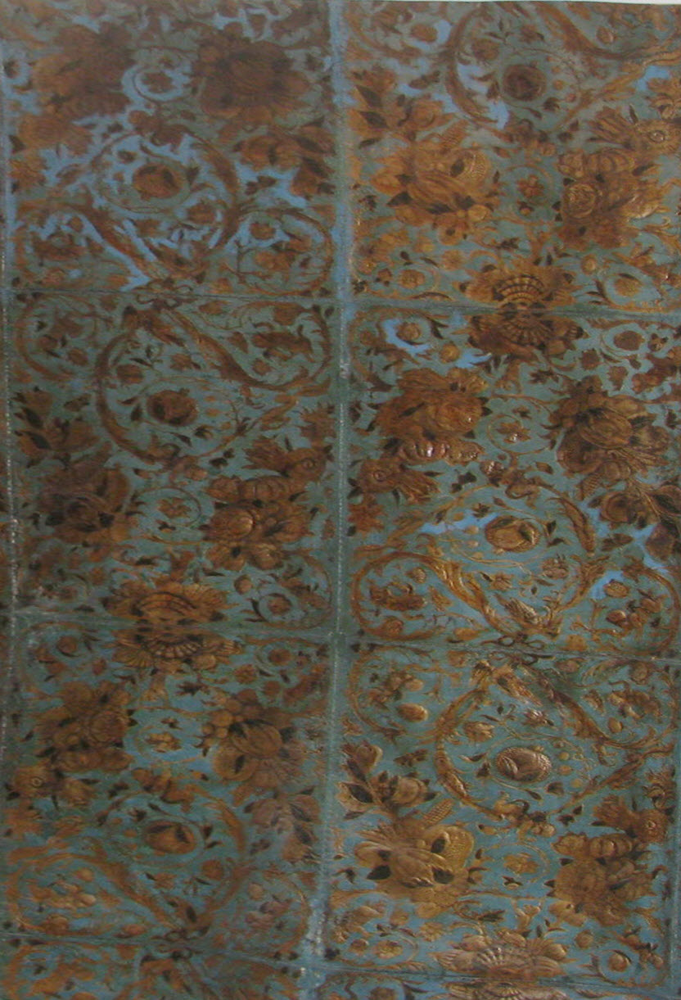
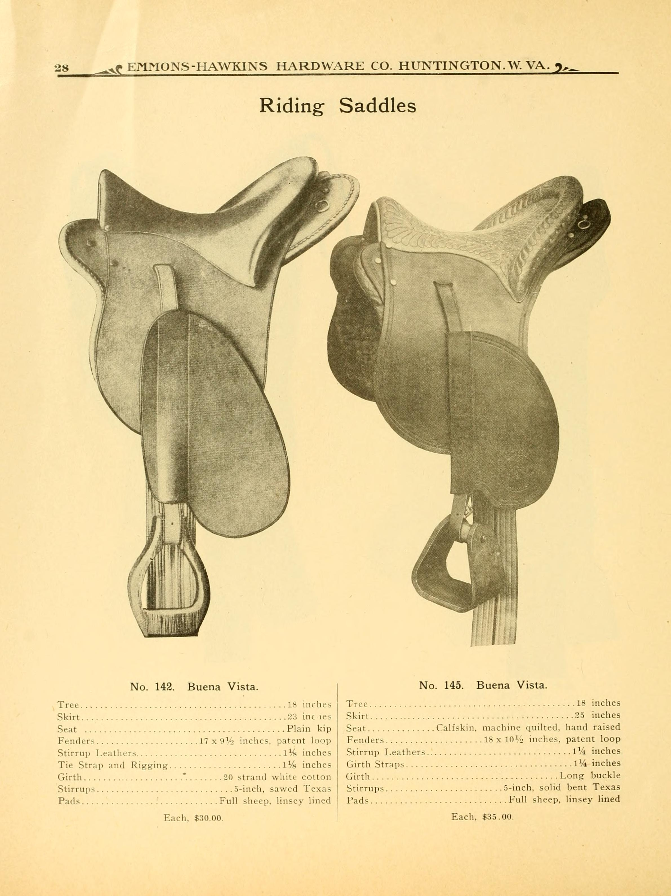

Sculpted In Rich Suede & Cloudlike Shearling
At Shearling Tote, we unite plush Alpine Merino pelts with vegetable-tanned Tuscan vachetta leather, creating heirloom carryalls crafted with two-needle saddle stitching and hand-burnished beeswax edges.

The Anatomy of an Heirloom Shearling Carryall
Every tote bag emerging from our Mercer Street workbenches represents uncompromising dedication to traditional saddlery craftsmanship, structural longevity, and tactile sensory luxury.

Unbreakable Double-Handed Saddle Stitching
Unlike commercial lockstitch sewing machines that unravel completely if a single thread breaks, our artisans employ the centuries-old saddler's stitch using twin blunt harness needles and custom beeswax-rubbed French linen thread.
- Two independent needle threads cross through every diamond-punched awl hole.
- Internal friction knot locks every stitch individually against structural tension.
- Tear-resistant reinforcement at handle anchor stress points with hidden skived vellum.
- Hand-hammered seam closure for flush alignment and ergonomic carrying comfort.

Tuscan Chestnut & Mimosa Vegetable Tanning
Our buttery suede bases and structural vachetta straps are slow-tanned in Santa Croce sull'Arno pit vats using organic chestnut wood powders, mimosa bark tannins, and tallow fats over sixty days.
- 100% chromium-free tanning chemistry preserving natural breathability and suppleness.
- Develops an intoxicating amber patina that deepens with every year of ownership.
- Velvety reverse suede buffed with fine pumice stones for ultra-tactile finish.
- Rich natural honey and beeswax aroma evocative of historic Parisian saddleries.

Solid Sand-Cast Antiqued Brass Hardware
We reject hollow zinc alloys in favor of heavyweight solid brass sand-cast fittings manufactured in a boutique foundry. Every swivel clip, D-ring, and foot stud is hand-buffed to a warm satin glow.
- Hand-peened solid copper and brass rivets securing load-bearing strap junctions.
- Protective bottom metal studs shielding delicate wool bases when set down.
- Spring-loaded Italian trigger swivel clips tested for 80-kilogram tensile pull.
- Unlacquered living brass finish designed to age gracefully alongside the leather.
Commission Your Bespoke Shearling Carryall
Visit our private consultation salon at 181 Mercer Street to select your lambskin pelt, customize strap drop dimensions, and personalize hand-stamped gold foil monograms.
Schedule Private Salon Consultation